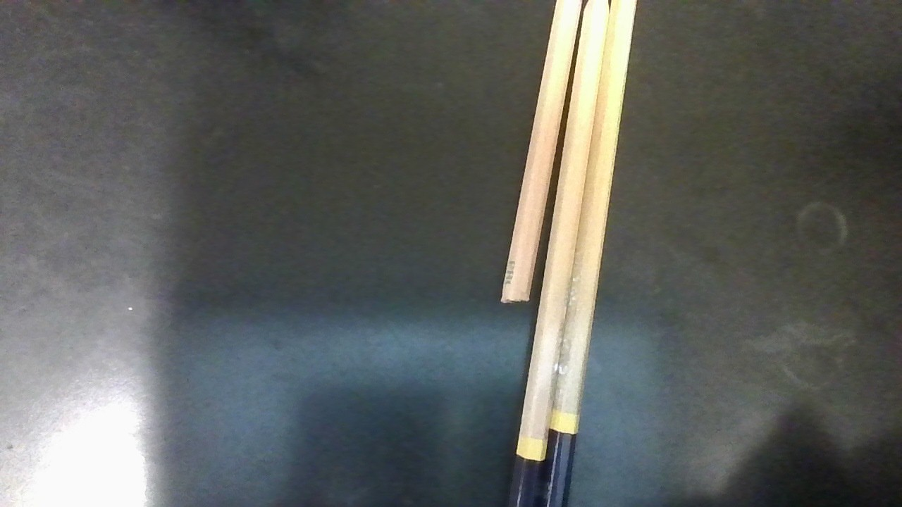

Pencils

Three graphite pencils are used with various hardness, 2B, 8B, and 2H.
Paper
We measured the coefficient of friction on five different types of paper, so we can compare them all.
Microscope
A Microscope with a W10XC-15.5MM lense to observe the surfaces microscopically.